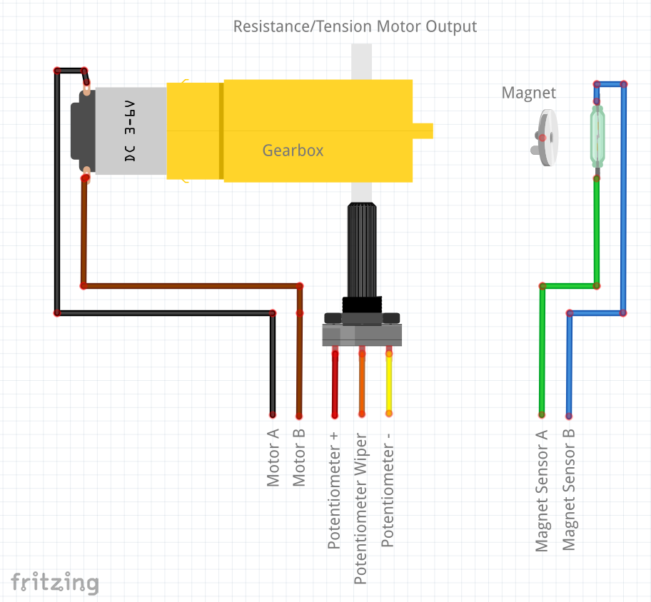
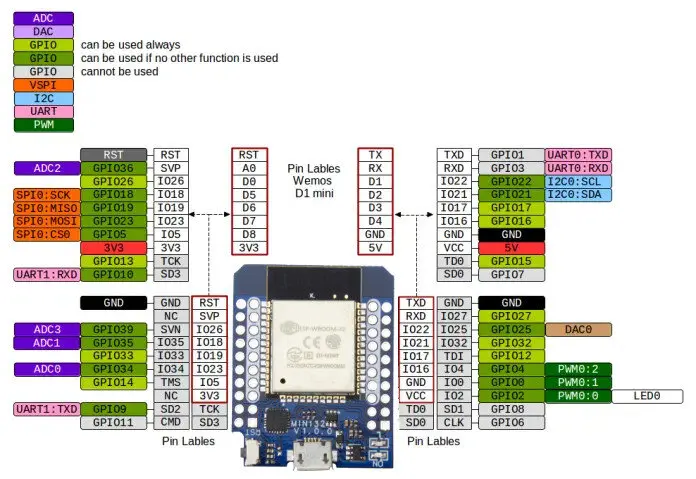

Exercise Machine UI
I admit it, I really need to improve my health and get in shape. So why not attach that need to a project? We've owned a few various weight and exercise machines over the years, and I don't think we purchased any of them new. But buying used machines always came with a few downsides, and in nearly every case, the electronic controls for the machines never quite worked right.
I'm actually really happy with how this project is turning out. It's not done yet, but it's functional enough to get going, and I'm excited to share this project in the hopes it will be both fun and helpful for others.
The Electrical Bits Aren't Too Complicated
In the case of both our recumbent bike and our elliptical machine, there are only two things that need to be interfaced with:
- The "resistance" motor
- The tachometer
The Resistance Motor
The resistance motor is usually a 5-wire device. It's a geared motor that pulls on a cable that moves some magnets closer or further from a flywheel. When the magnets are close to the flywheel they generate eddy currents in the flywheel, which makes it harder to turn. That geared motor also drives a potentiometer so that the exercise machine knows where the resistance motor is at.
You could replace this part with a large enough hobby servo, and it would probably work really well.
The Tachometer
The tachometer is even simpler. The pedals or flywheel have a magnet attached to it, and each time it spins around, it triggers a reed switch. The state of the reed switch can then be read by a microcontroller. Each time the wheel turns, the reed switch is triggered. The pulses that are generated can be measured to determine the speed the user is pedaling the machine at.
Interfacing the Electrical Bits
Here's what the connections (at least on my recumbent bike) look like. Our elliptical connects the Potentiometer − to one of the Magnet Sensor (reed switch) wires. This works because both are ultimately connected to ground anyway.
My Heart Rate
The recumbent bike machine also has metal hand-grips that can be used to measure your heart rate just like an EKG can. I tried this out using a Grove EMG sensor module, and it kind of worked, so I opted to at least try to build in that functionality as well, but with a chip that was designed more for that purpose - the AD8232.
Building an Electrical Interface
I needed to build a circuit that would:
- Turn the motor forward or backward
- Read the potentiometer
- Detect the state of the reed switch
- Read my heart rate using an ECG chip
- Take in 12V DC and regulate it down to power everything
- Read the state of a few buttons
- Include a piezo buzzer
Selecting a Microcontroller
Before going any further, I needed to decide which microcontroller to use for this project. I'm most comfortable with classic Arduinos, the Parallax Propeller, and the Raspberry Pi Pico. Any of these would have worked well - but I chose to use the ESP32 because I wanted most of the visual parts of the interface to be on a smartphone or tablet and keep the code on the microcontroller simple and easy.
I also chose the ESP32 because I've added a lot of ESP8266 and ESP32 modules to our Home Assistant setup, and the ESP32 modules are much, much more stable when connected to our home WiFi.
The Circuit
Power Supply
Let's start with a simple, but very important part of the circuit: the power supply.
I have a TON of 12V 0.5A wall-warts left over from a security camera installation I helped with a long time ago.

I decided to use an inexpensive ESP32 module from Amazon, and it needs to be powered at 5V. A linear regulator would generate a fair amount of heat, so I opted to use a switching regulator with a 7805-style pinout. I then chose to regulate that 5V output to 3.3V with an AMS1117 linear regulator.
Motor Driver, Piezo Buzzer, and Buttons
One of the most common ways to drive a motor is with an H-bridge, and an H-bridge-on-a-chip is easy enough to get, so I used a DRV8870. It's easy to connect - just 2 logic inputs, a power input, and a direct connection to the motor. The chip is capable of current sensing, but I opted not to use it.
I also added a piezo buzzer (with an included driver) and 4 buttons. This allows me to give the user some feedback when they press a button, and the 4 buttons give me some flexibility, or even allow the interface to be used without a phone or tablet if necessary.
The Connections
There are a lot of connections on the board - both to the ESP32 module and to the exercise machine itself. The ESP32 has 20 pins. Some pins are better than others for different functions. The ESP32 has several ADC pins that work well for things like the potentiometer. Additionally, it's helpful to break out the I2C pins, which allows for future expansion.
The (Non-Functional) ECG
This would have been the icing on the cake, but alas, it isn't working...yet. I attempted to copy Sparkfun's open-source design for their AD8232 module. It didn't work, and I haven't been able to fully troubleshoot the circuit.
Fabricating the Module
I've been using JLCPCB's PCB and SMT service for a few years now, and for the most part, I've been happy with the boards I get back. Don't get me wrong, I have been using OSHPark and using an old kitchen skillet to reflow boards on my own, too, but my vision isn't getting any better as I get older ;)
I probably should prototype a bit more than I do - the first boards I get back always need to be bodged in some way. These were no exception. The schematics above are actually corrected when compared to the order I originally placed. I originally connected the motor driver IC to pins that shouldn't be used, and connected the buzzer to an NC (no connection) pin on the ESP32 module. I forgot to ground the current sense pin on the motor driver IC, too. And, like I stated before, the ECG part of the circuit isn't working, either. The good news is that except for the ECG, the bodges aren't too difficult.
Here's what the boards looked like when they came back from the fab:
Building the Enclosure
Materials
Whenever I get a chance to go to the "big city," I always try to stop into TAP plastics. They almost always have a bin of scrap material that is inexpensive and great for smaller projects like this. I've built up a decent collection of 2mm, 3mm, and 6mm clear acrylic plastic that I can use in the laser cutter.
Design
"When you are a hammer, every problem looks like a nail." That's sort of true for how I approach using the laser to build things like enclosures. Having worked for Piper Learning, I'm very comfortable with a sort of tab and slot method of construction, and this project was no exception. The part is a fairly simple box. The requirements for the enclosure were to:
- Be large enough to contain the electronics
- Bolt together with long through-bolts that tapped into the thick plastic sheet on the bottom
- Have vent holes because the ESP modules can generate a little heat
- Have a sort of "ledge" to hold a phone or tablet
- Have mounting holes so that it can bolt onto the exercise machine in the same way as the old controls
- Have a way to mount the power switch
- Have some way to push the buttons on the PCB
Here's what I came up with. The top, bottom, and shelf pieces are 6mm thick, and the sides are 3mm thick.
Building the Web Page
Coming Up With a Design
I've noticed that whenever I have a plan for building something - even if that plan is as simple as a back-of-the-napkin sketch, things always go better. I love building UIs, but sometimes I find myself lost in the weeds and obsessing over details. To help keep me moving forward, I decided to make a plan for the UI, and that started with a sketch. This is actually the final drawing. There were several drafts before I got here:

Translating the Sketch to HTML and CSS
I'm a big fan of flex layouts, but in this case, a grid layout seemed more appropriate. Grid layouts are kind of a pain to set up, however. The good news is that there is a pretty fantastic tool for getting the CSS and HTML set up for a grid written by Sarah Drasner available here: CSS Grid Generator. Once I had the CSS and HTML for the grid, I pasted it into a boilerplate HTML page and continued building from there.
Making 3D Tracks
Another thing I've been working on at Piper is "gamifying" some of the Ed Tech products and tutorials we sell. The approach we are exploring involves some 3D worlds, so I've been working with a neat JS library called Three.js. It's a deep rabbit hole you can fall into, and really fun to play with!
I had the thought that if I could create some kind of a "track" that you are virtually on while riding the bike or using the elliptical, it would 1) be fun, and 2) provide some info about what resistance setting the machine should have, and vary it throughout the exercise session. This led me to a kind of spline curve that can be defined with just a handful of points.
One of the cool things about Three.js is that they provide a lot of tools, editors, and simulators, and the catmull spline editor looked like a really interesting way to create a track.
Splines are just defined by a small number of points, so I created a few tracks, named them, and used a few more things from Three.js to build a visualizer. It also worked well to measure the tangent slope along the curve to determine the resistance setting for the exercise machine as you ride around the track. Three.js provides some nice functions that handle most of the trig for you, so it actually came together very quickly.
const tracks = [
{
name: "Gentle Ride",
cameraStart: new THREE.Vector3(-190, 130, -450),
track: [
new THREE.Vector3(37, 0, -79),
new THREE.Vector3(174, 10, -76),
new THREE.Vector3(215, 20, 116),
new THREE.Vector3(6, 30, 204),
new THREE.Vector3(-193, 20, 158),
new THREE.Vector3(-192, 10, -71),
new THREE.Vector3(-81, 0, -154),
new THREE.Vector3(37, 0, -79),
],
curve: null,
slope: null,
min: null,
max: null,
path: null,
},
{
name: "Crossover",
cameraStart: new THREE.Vector3(-380, 210, 270),
track: [
new THREE.Vector3(-207, 0, -229),
new THREE.Vector3(128, 44, -192),
new THREE.Vector3(17, 98, 32),
new THREE.Vector3(-215, 125, 210),
new THREE.Vector3(100, 77, 206),
new THREE.Vector3(-64, 37, 8),
new THREE.Vector3(-207, 0, -229),
],
curve: null,
slope: null,
min: null,
max: null,
path: null,
},
{
name: "Rolling Hills",
cameraStart: new THREE.Vector3(370, 80, 380),
track: [
new THREE.Vector3(258, 15, -40),
new THREE.Vector3(51, 110, -384),
new THREE.Vector3(-255, 0, -205),
new THREE.Vector3(-436, 55, 221),
new THREE.Vector3(-44, 88, 203),
new THREE.Vector3(258, 15, -40),
],
curve: null,
slope: null,
min: null,
max: null,
path: null,
}
];
There's more to it than that, of course, and all of it is available in the GitHub repo for the project.
Once the web page was built, I combined the CSS, JavaScript, and HTML into a single file and
added it into the ESP's main.cpp file as a raw literal string so it can be served
as
a web page.
Coding on the ESP is still fairly sloppy at this point. It works, but it's not very clean. For
example, the feedback for the resistance motor would be better served by a PID instead of the
low-pass filter I implemented. I also used a lot of flags and countdown variables to "thread" a
bunch of stuff in the single loop. Interrupts would be a much cleaner way to make it work. And
finally, adding an SD card would have allowed the HTML, JS, and CSS files to stay separate and
be served from the SD card, which would keep the main.cpp file much shorter.
The Result
It works quite well!
Here's a simulated screen:
Here's a picture of the machine: